#Formatted the columns titles to lowercase
production_df <- clean_names(production_df)#Used the pipe operator to rename the columns
production_df <- production_df %>%
rename(country = entity,
country_code = code,
production = `livestock_primary_meat_total_1765_production_5510_tonnes_tonnes`)#filtered OWID_WRL
#created new data frame
country_code_world <- filter(production_df, country_code == "OWID_WRL")continents <- filter(production_df,is.na(country_code))v2_productiondf <- production_dfv2_productiondf <- v2_productiondf %>%
filter(!is.na(country_code))v2_productiondf <- v2_productiondf %>%
filter(country_code != "OWID_WRL")countries <- unique(v2_productiondf[c("country")])years <- unique(v2_productiondf[c("year")])#JA coding ends
#Used the pipe operator to clean the names of the columns, rename columns, to filter na codes (df without continents) and change the na values to 0.
pc_meat_consumption_kg_country <- pc_meat_consumption_kg %>%
clean_names() %>%
rename(mutton_goat_kg = mutton_and_goat_kilograms_per_year,
other_kg = other_meats_kilograms_per_person,
poultry_kg = poultry_kilograms_per_year,
pigmeat_kg = pigmeat_kilograms_per_year,
beef_bufallo_kg = beef_and_bufallo_kilograms_per_year) %>%
filter(!is.na(code)) %>%
mutate_all( ~replace(., is.na(.), 0.0))#Used the pipe operator to clean the names of the columns, rename columns, to filter na codes (df without continents) and change the na values to 0.
pc_meat_consumption_kg_continent <- pc_meat_consumption_kg %>%
clean_names() %>%
rename(mutton_goat_kg = mutton_and_goat_kilograms_per_year,
other_kg = other_meats_kilograms_per_person,
poultry_kg = poultry_kilograms_per_year,
pigmeat_kg = pigmeat_kilograms_per_year,
beef_bufallo_kg = beef_and_bufallo_kilograms_per_year) %>%
filter(is.na(code))#JA begins 8/4/21
countries <- unique(v2_productiondf[c("country")])
years <- unique(v2_productiondf[c("year")])#Grouped the countries and sum the production
p_countries <- v2_productiondf %>%
select(c(country, production)) %>%
group_by(country)%>%
summarise(production = sum(production)) %>%
arrange(desc(production))#5 Top Countries produces meat.
p_countries %>%
select(country,production) %>%
head(n=5)## # A tibble: 5 × 2
## country production
## <chr> <dbl>
## 1 China 2280907943
## 2 United States 1772128151
## 3 Brazil 660064408
## 4 USSR 445166200
## 5 Germany 380520101#5 Bottom Countries produces meat.
p_countries %>%
select(country, production) %>%
tail(n=5)## # A tibble: 5 × 2
## country production
## <chr> <dbl>
## 1 Tuvalu 5627
## 2 Niue 4150
## 3 Nauru 3274
## 4 Saint Pierre and Miquelon 2777
## 5 Tokelau 1217#Graph showing the lowest countries producing meat from 1960-2018
p_countries %>%
select(country, production) %>%
arrange(production) %>%
head(n=5) %>%
ggplot(aes(x=country, y=production, fill=production))+
geom_col()+
theme(axis.text.x = element_text(angle = 50, hjust=1))+
labs(y="Production", x= "Country",title="Bottom Countries - Global Meat Production", subtitle ="between 1960 to 2018")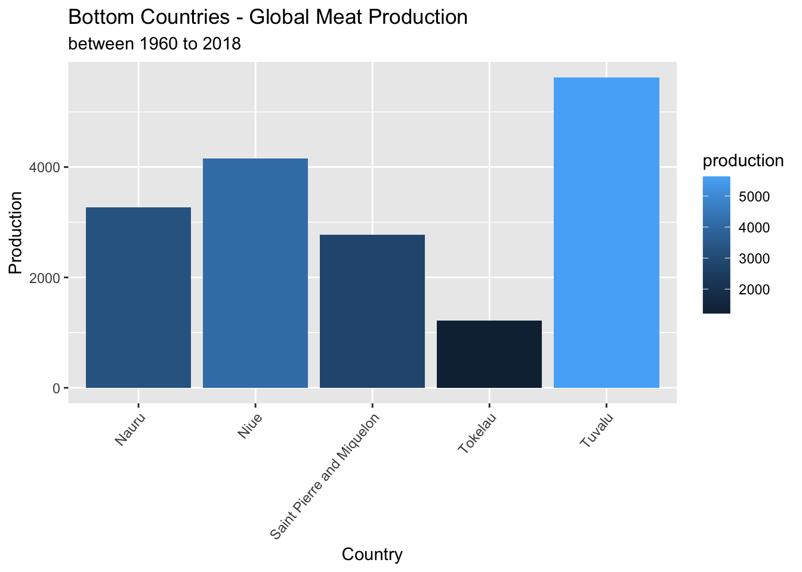
#Graph showing the top countries producing meat from 1960-2018
p_countries %>%
select(country,production) %>%
head(n=5) %>%
mutate(production = production / 1000000) %>%
ggplot(aes(x=country, y=production, fill=production))+
geom_col() +
labs(y="Production in Mio.", x= "Country",title="Top Countries - Global Meat Production", subtitle ="between 1960 to 2018") 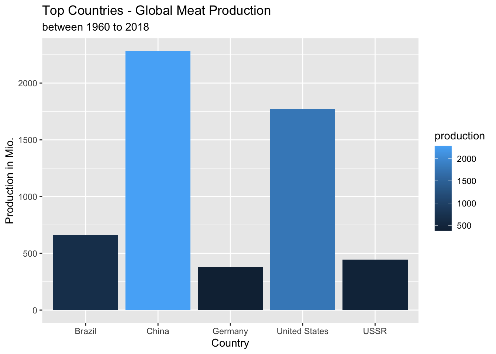
#Summary that presents the top countries that produces meat in 1961.
v2_productiondf %>%
select(country, year, production) %>%
filter(year == 1961) %>%
arrange(desc(production)) ## country year production
## 1 United States 1961 16513033
## 2 USSR 1961 8700000
## 3 Germany 1961 4238328
## 4 France 1961 3692700
## 5 Argentina 1961 2604313
## 6 China 1961 2549889
## 7 United Kingdom 1961 2201619
## 8 Brazil 1961 2119990
## 9 Poland 1961 1717900
## 10 India 1961 1696091
## 11 Canada 1961 1478414
## 12 Italy 1961 1473150
## 13 Australia 1961 1400927
## 14 Mexico 1961 1003181
## 15 Denmark 1961 846250
## 16 Hungary 1961 764900
## 17 Yugoslavia 1961 759490
## 18 Czechoslovakia 1961 753455
## 19 New Zealand 1961 741698
## 20 Netherlands 1961 720100
## 21 Japan 1961 687135
## 22 Spain 1961 659863
## 23 South Africa 1961 607347
## 24 Romania 1961 571170
## 25 Turkey 1961 477924
## 26 Austria 1961 453845
## 27 Colombia 1961 442045
## 28 Thailand 1961 419067
## 29 Vietnam 1961 374975
## 30 Sweden 1961 367545
## 31 Pakistan 1961 365890
## 32 Uruguay 1961 353092
## 33 Indonesia 1961 338105
## 34 Philippines 1961 334016
## 35 Iran 1961 319710
## 36 Ireland 1961 311867
## 37 Nigeria 1961 300435
## 38 Egypt 1961 295960
## 39 Bulgaria 1961 289168
## 40 Switzerland 1961 259501
## 41 Taiwan 1961 235402
## 42 Chile 1961 229344
## 43 Peru 1961 217253
## 44 Venezuela 1961 209785
## 45 Cuba 1961 189288
## 46 Portugal 1961 173603
## 47 Bangladesh 1961 168900
## 48 Kenya 1961 167407
## 49 Democratic Republic of Congo 1961 166850
## 50 Mongolia 1961 165500
## 51 Morocco 1961 164813
## 52 Paraguay 1961 159101
## 53 Greece 1961 155846
## 54 Melanesia 1961 150463
## 55 Finland 1961 144000
## 56 Madagascar 1961 143346
## 57 Papua New Guinea 1961 139309
## 58 Norway 1961 137659
## 59 Afghanistan 1961 129420
## 60 Tanzania 1961 113328
## 61 Myanmar 1961 106436
## 62 South Korea 1961 106296
## 63 Malaysia 1961 102051
## 64 Iraq 1961 95060
## 65 Uganda 1961 92123
## 66 Hong Kong 1961 88476
## 67 Bolivia 1961 88392
## 68 North Korea 1961 86488
## 69 Algeria 1961 82840
## 70 Ecuador 1961 81869
## 71 Somalia 1961 78786
## 72 Cote d'Ivoire 1961 76866
## 73 Zimbabwe 1961 74235
## 74 Mali 1961 72691
## 75 Cameroon 1961 62562
## 76 Israel 1961 62550
## 77 Ghana 1961 62493
## 78 Nepal 1961 62451
## 79 Guatemala 1961 58293
## 80 Dominican Republic 1961 53946
## 81 Niger 1961 52875
## 82 Tunisia 1961 52154
## 83 Singapore 1961 51891
## 84 Yemen 1961 46610
## 85 Syria 1961 45607
## 86 Zambia 1961 44005
## 87 Chad 1961 43270
## 88 Senegal 1961 41806
## 89 Lebanon 1961 40031
## 90 Haiti 1961 40024
## 91 Sri Lanka 1961 39137
## 92 Saudi Arabia 1961 38400
## 93 Timor 1961 38084
## 94 Burkina Faso 1961 38049
## 95 Mozambique 1961 37500
## 96 Costa Rica 1961 36750
## 97 Nicaragua 1961 36384
## 98 Angola 1961 35719
## 99 El Salvador 1961 33882
## 100 Puerto Rico 1961 33344
## 101 Mauritania 1961 32010
## 102 Namibia 1961 30295
## 103 Panama 1961 29507
## 104 Central African Republic 1961 28445
## 105 Honduras 1961 28263
## 106 Cambodia 1961 27223
## 107 Albania 1961 25410
## 108 Botswana 1961 22691
## 109 Jamaica 1961 21149
## 110 Iceland 1961 19470
## 111 Laos 1961 19437
## 112 Benin 1961 19388
## 113 Gabon 1961 17862
## 114 Guinea 1961 16297
## 115 Lesotho 1961 16281
## 116 Libya 1961 14356
## 117 Togo 1961 13146
## 118 Malawi 1961 12586
## 119 Kuwait 1961 12375
## 120 Swaziland 1961 12139
## 121 Rwanda 1961 11896
## 122 Cyprus 1961 11404
## 123 Jordan 1961 10250
## 124 Trinidad and Tobago 1961 9903
## 125 Congo 1961 9684
## 126 Burundi 1961 9018
## 127 Sierra Leone 1961 8813
## 128 Liberia 1961 8691
## 129 Guinea-Bissau 1961 7738
## 130 United Arab Emirates 1961 7571
## 131 Reunion 1961 7197
## 132 Malta 1961 6386
## 133 Guyana 1961 5583
## 134 Martinique 1961 5406
## 135 Suriname 1961 4548
## 136 Macao 1961 4072
## 137 New Caledonia 1961 4066
## 138 Fiji 1961 3908
## 139 Gambia 1961 3809
## 140 Polynesia 1961 3686
## 141 Oman 1961 3215
## 142 Bhutan 1961 2892
## 143 Barbados 1961 2831
## 144 Mauritius 1961 2740
## 145 Djibouti 1961 2669
## 146 Guadeloupe 1961 2518
## 147 Vanuatu 1961 2312
## 148 Netherlands Antilles 1961 1780
## 149 Qatar 1961 1769
## 150 Samoa 1961 1710
## 151 Belize 1961 1369
## 152 Brunei 1961 1290
## 153 Bahamas 1961 1261
## 154 Comoros 1961 1093
## 155 Falkland Islands 1961 1047
## 156 Saint Lucia 1961 988
## 157 Western Sahara 1961 872
## 158 Solomon Islands 1961 868
## 159 French Guiana 1961 753
## 160 Kiribati 1961 714
## 161 United States Virgin Islands 1961 677
## 162 Cape Verde 1961 656
## 163 French Polynesia 1961 644
## 164 Dominica 1961 622
## 165 Grenada 1961 615
## 166 Saint Vincent and the Grenadines 1961 515
## 167 Bahrain 1961 500
## 168 Guam 1961 478
## 169 Tonga 1961 474
## 170 Saint Kitts and Nevis 1961 447
## 171 American Samoa 1961 413
## 172 Maldives 1961 400
## 173 Antigua and Barbuda 1961 395
## 174 Montserrat 1961 344
## 175 Sao Tome and Principe 1961 328
## 176 Greenland 1961 242
## 177 Bermuda 1961 239
## 178 British Virgin Islands 1961 223
## 179 Equatorial Guinea 1961 221
## 180 Cook Islands 1961 219
## 181 Seychelles 1961 204
## 182 Wallis and Futuna 1961 158
## 183 Saint Pierre and Miquelon 1961 95
## 184 Niue 1961 34
## 185 Tuvalu 1961 30
## 186 Nauru 1961 23
## 187 Tokelau 1961 6#Boxplot presents the top countries that produces meat in 1961.
v2_productiondf %>%
select(country, year, production) %>%
filter(year == 1961) %>%
arrange(desc(production)) %>%
head(n=10) %>%
ggplot(aes(x = country,y=production/1000000)) +
geom_boxplot()+
stat_summary(fun=mean, geom="point", shape=23, size=4)+
theme(axis.text.x = element_text(angle = 50, hjust=1))+
labs(y="Production", x= "Country",title="Global Meat Production", subtitle ="Top Countries in 1961")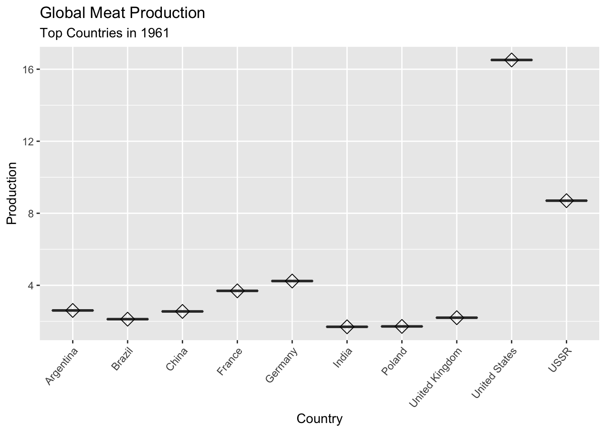
#Summary that presents the top countries that produces meat in 2018.
v2_productiondf %>%
select(country, year, production) %>%
filter(year == 2018) %>%
arrange(desc(production)) ## country year production
## 1 China 2018 88156383
## 2 United States 2018 46832946
## 3 Brazil 2018 29341250
## 4 Russia 2018 10629378
## 5 Germany 2018 8188920
## 6 India 2018 7454329
## 7 Mexico 2018 7051277
## 8 Spain 2018 7028021
## 9 Argentina 2018 5930063
## 10 France 2018 5621700
## 11 Vietnam 2018 5227733
## 12 Canada 2018 4893195
## 13 Australia 2018 4658530
## 14 Poland 2018 4462900
## 15 United Kingdom 2018 4087453
## 16 Japan 2018 4016429
## 17 Pakistan 2018 3870230
## 18 Turkey 2018 3668362
## 19 Italy 2018 3667805
## 20 Philippines 2018 3641656
## 21 Indonesia 2018 3596531
## 22 Myanmar 2018 3528801
## 23 South Africa 2018 3241019
## 24 Iran 2018 3086281
## 25 Netherlands 2018 2936411
## 26 Thailand 2018 2932944
## 27 Colombia 2018 2829394
## 28 South Korea 2018 2498302
## 29 Ukraine 2018 2382786
## 30 Egypt 2018 2152429
## 31 Malaysia 2018 2113716
## 32 Peru 2018 2015635
## 33 Denmark 2018 1874459
## 34 Belgium 2018 1825437
## 35 Taiwan 2018 1531124
## 36 Chile 2018 1504623
## 37 New Zealand 2018 1452644
## 38 Nigeria 2018 1451207
## 39 Morocco 2018 1345660
## 40 Venezuela 2018 1294958
## 41 Uzbekistan 2018 1205758
## 42 Belarus 2018 1193215
## 43 Romania 2018 1151673
## 44 Ireland 2018 1139853
## 45 Kazakhstan 2018 1050620
## 46 Hungary 2018 1037355
## 47 Sudan 2018 986987
## 48 Bolivia 2018 914906
## 49 Austria 2018 910026
## 50 Kenya 2018 879126
## 51 Portugal 2018 851574
## 52 Ecuador 2018 825199
## 53 Algeria 2018 806392
## 54 Israel 2018 803723
## 55 Ethiopia 2018 788102
## 56 Saudi Arabia 2018 762218
## 57 Chad 2018 748787
## 58 Paraguay 2018 734282
## 59 Bangladesh 2018 705745
## 60 Uruguay 2018 662119
## 61 Sweden 2018 569733
## 62 Melanesia 2018 564126
## 63 Malawi 2018 561944
## 64 Tanzania 2018 536904
## 65 Uganda 2018 519318
## 66 Serbia 2018 514734
## 67 Czech Republic 2018 506029
## 68 Papua New Guinea 2018 501672
## 69 Switzerland 2018 485699
## 70 Dominican Republic 2018 480509
## 71 Guatemala 2018 477118
## 72 Mali 2018 460730
## 73 Greece 2018 446972
## 74 South Sudan 2018 433800
## 75 Mongolia 2018 430466
## 76 Yemen 2018 424876
## 77 Nepal 2018 399988
## 78 Finland 2018 395697
## 79 Syria 2018 369151
## 80 Norway 2018 361001
## 81 Cuba 2018 348827
## 82 Madagascar 2018 347152
## 83 North Korea 2018 346773
## 84 Tunisia 2018 345521
## 85 Afghanistan 2018 330636
## 86 Azerbaijan 2018 326024
## 87 Panama 2018 322935
## 88 Zambia 2018 321329
## 89 Turkmenistan 2018 309941
## 90 Cameroon 2018 306393
## 91 Nicaragua 2018 292028
## 92 Ghana 2018 290563
## 93 Cote d'Ivoire 2018 283403
## 94 Honduras 2018 283029
## 95 Costa Rica 2018 282275
## 96 Angola 2018 262490
## 97 Burkina Faso 2018 261402
## 98 Zimbabwe 2018 259091
## 99 Lithuania 2018 250183
## 100 Democratic Republic of Congo 2018 246984
## 101 Jordan 2018 244200
## 102 Mozambique 2018 239705
## 103 Bulgaria 2018 232673
## 104 Croatia 2018 231042
## 105 Kyrgyzstan 2018 229753
## 106 Senegal 2018 226682
## 107 Sri Lanka 2018 215157
## 108 Libya 2018 191541
## 109 Iraq 2018 191101
## 110 Central African Republic 2018 188629
## 111 Somalia 2018 188165
## 112 Niger 2018 182125
## 113 Cambodia 2018 180454
## 114 Lebanon 2018 180141
## 115 United Arab Emirates 2018 170357
## 116 El Salvador 2018 162032
## 117 Laos 2018 156518
## 118 Slovakia 2018 152268
## 119 Hong Kong 2018 150884
## 120 Jamaica 2018 148165
## 121 Slovenia 2018 137171
## 122 Guinea 2018 129046
## 123 Singapore 2018 125342
## 124 Moldova 2018 122512
## 125 Mauritania 2018 118094
## 126 Haiti 2018 109239
## 127 Armenia 2018 108247
## 128 Kuwait 2018 108012
## 129 Tajikistan 2018 108011
## 130 Albania 2018 96034
## 131 Rwanda 2018 95278
## 132 Latvia 2018 91469
## 133 Palestine 2018 84319
## 134 Bosnia and Herzegovina 2018 82235
## 135 Benin 2018 81417
## 136 Oman 2018 80033
## 137 Cyprus 2018 79496
## 138 Estonia 2018 74364
## 139 Namibia 2018 73763
## 140 Togo 2018 72643
## 141 Georgia 2018 72133
## 142 Botswana 2018 71616
## 143 Trinidad and Tobago 2018 68597
## 144 Congo 2018 65514
## 145 Puerto Rico 2018 60420
## 146 Mauritius 2018 52213
## 147 Guyana 2018 49984
## 148 Sierra Leone 2018 47104
## 149 Reunion 2018 44554
## 150 Fiji 2018 44127
## 151 Eritrea 2018 40868
## 152 Gabon 2018 40220
## 153 Liberia 2018 37183
## 154 Timor 2018 36778
## 155 Iceland 2018 35731
## 156 Lesotho 2018 30290
## 157 Burundi 2018 28914
## 158 Guinea-Bissau 2018 28084
## 159 Swaziland 2018 26305
## 160 Brunei 2018 26127
## 161 Bahrain 2018 24397
## 162 Qatar 2018 24131
## 163 Belize 2018 23885
## 164 Luxembourg 2018 23621
## 165 Macedonia 2018 22255
## 166 Barbados 2018 19732
## 167 Suriname 2018 14636
## 168 Montenegro 2018 13282
## 169 Djibouti 2018 11694
## 170 Malta 2018 11630
## 171 Macao 2018 11361
## 172 Polynesia 2018 11217
## 173 Gambia 2018 9311
## 174 Vanuatu 2018 8180
## 175 Bahamas 2018 7543
## 176 Bhutan 2018 6770
## 177 New Caledonia 2018 6663
## 178 Guadeloupe 2018 6317
## 179 Cape Verde 2018 5636
## 180 Samoa 2018 5271
## 181 Saint Lucia 2018 4678
## 182 Solomon Islands 2018 3484
## 183 Martinique 2018 3078
## 184 Western Sahara 2018 2518
## 185 Tonga 2018 2405
## 186 Comoros 2018 2365
## 187 French Polynesia 2018 1947
## 188 Kiribati 2018 1857
## 189 Micronesia (country) 2018 1487
## 190 French Guiana 2018 1452
## 191 Dominica 2018 1422
## 192 Sao Tome and Principe 2018 1339
## 193 Grenada 2018 1194
## 194 Saint Vincent and the Grenadines 2018 1119
## 195 Seychelles 2018 1040
## 196 Falkland Islands 2018 947
## 197 Montserrat 2018 938
## 198 Maldives 2018 870
## 199 Netherlands Antilles 2018 732
## 200 United States Virgin Islands 2018 732
## 201 Faeroe Islands 2018 637
## 202 Equatorial Guinea 2018 626
## 203 Cook Islands 2018 572
## 204 Greenland 2018 505
## 205 Antigua and Barbuda 2018 407
## 206 Wallis and Futuna 2018 381
## 207 Guam 2018 365
## 208 American Samoa 2018 344
## 209 British Virgin Islands 2018 267
## 210 Saint Kitts and Nevis 2018 232
## 211 Bermuda 2018 224
## 212 Tuvalu 2018 182
## 213 Niue 2018 90
## 214 Nauru 2018 79
## 215 Tokelau 2018 24
## 216 Saint Pierre and Miquelon 2018 2#Boxplot presents the top countries that produces meat in 2018.
v2_productiondf %>%
select(country, year, production) %>%
filter(year == 2018) %>%
arrange(desc(production)) %>%
head(n=10) %>%
ggplot(aes(x = country, y=production/1000000)) +
geom_boxplot()+
stat_summary(fun=mean, geom="point", shape=23, size=4)+
theme(axis.text.x = element_text(angle = 50, hjust=1))+
labs(y="Production", x= "Country",title="Global Meat Production", subtitle ="Top Countries in 2018")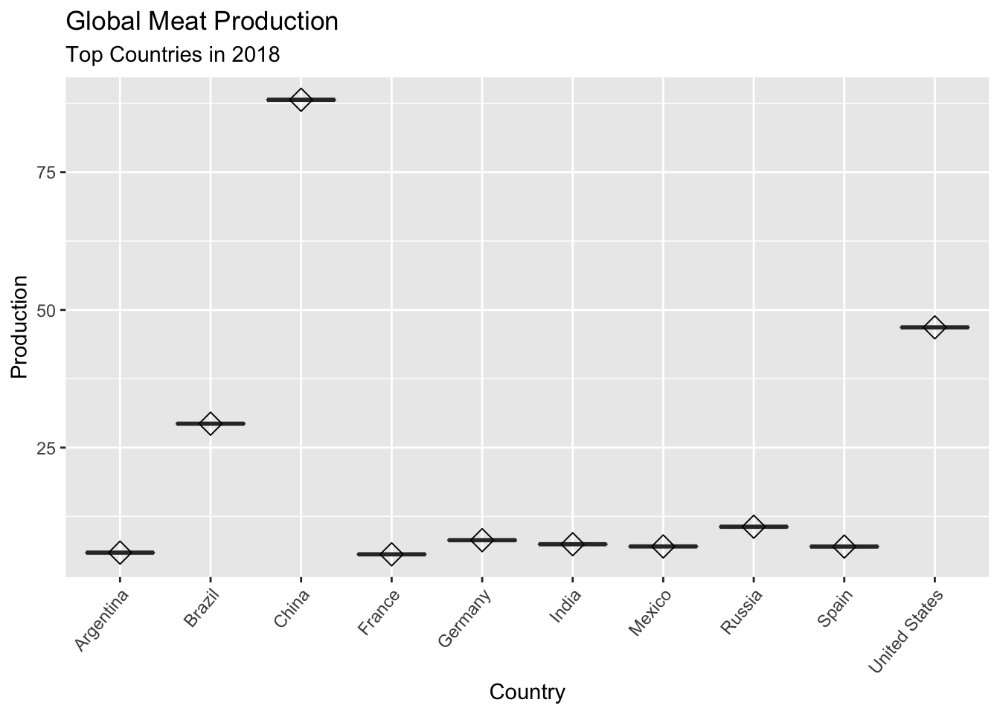
#Summary that presents the lowest countries that produces meat in 1961.
v2_productiondf %>%
select(country, year, production) %>%
filter(year == 1961) %>%
arrange(production) ## country year production
## 1 Tokelau 1961 6
## 2 Nauru 1961 23
## 3 Tuvalu 1961 30
## 4 Niue 1961 34
## 5 Saint Pierre and Miquelon 1961 95
## 6 Wallis and Futuna 1961 158
## 7 Seychelles 1961 204
## 8 Cook Islands 1961 219
## 9 Equatorial Guinea 1961 221
## 10 British Virgin Islands 1961 223
## 11 Bermuda 1961 239
## 12 Greenland 1961 242
## 13 Sao Tome and Principe 1961 328
## 14 Montserrat 1961 344
## 15 Antigua and Barbuda 1961 395
## 16 Maldives 1961 400
## 17 American Samoa 1961 413
## 18 Saint Kitts and Nevis 1961 447
## 19 Tonga 1961 474
## 20 Guam 1961 478
## 21 Bahrain 1961 500
## 22 Saint Vincent and the Grenadines 1961 515
## 23 Grenada 1961 615
## 24 Dominica 1961 622
## 25 French Polynesia 1961 644
## 26 Cape Verde 1961 656
## 27 United States Virgin Islands 1961 677
## 28 Kiribati 1961 714
## 29 French Guiana 1961 753
## 30 Solomon Islands 1961 868
## 31 Western Sahara 1961 872
## 32 Saint Lucia 1961 988
## 33 Falkland Islands 1961 1047
## 34 Comoros 1961 1093
## 35 Bahamas 1961 1261
## 36 Brunei 1961 1290
## 37 Belize 1961 1369
## 38 Samoa 1961 1710
## 39 Qatar 1961 1769
## 40 Netherlands Antilles 1961 1780
## 41 Vanuatu 1961 2312
## 42 Guadeloupe 1961 2518
## 43 Djibouti 1961 2669
## 44 Mauritius 1961 2740
## 45 Barbados 1961 2831
## 46 Bhutan 1961 2892
## 47 Oman 1961 3215
## 48 Polynesia 1961 3686
## 49 Gambia 1961 3809
## 50 Fiji 1961 3908
## 51 New Caledonia 1961 4066
## 52 Macao 1961 4072
## 53 Suriname 1961 4548
## 54 Martinique 1961 5406
## 55 Guyana 1961 5583
## 56 Malta 1961 6386
## 57 Reunion 1961 7197
## 58 United Arab Emirates 1961 7571
## 59 Guinea-Bissau 1961 7738
## 60 Liberia 1961 8691
## 61 Sierra Leone 1961 8813
## 62 Burundi 1961 9018
## 63 Congo 1961 9684
## 64 Trinidad and Tobago 1961 9903
## 65 Jordan 1961 10250
## 66 Cyprus 1961 11404
## 67 Rwanda 1961 11896
## 68 Swaziland 1961 12139
## 69 Kuwait 1961 12375
## 70 Malawi 1961 12586
## 71 Togo 1961 13146
## 72 Libya 1961 14356
## 73 Lesotho 1961 16281
## 74 Guinea 1961 16297
## 75 Gabon 1961 17862
## 76 Benin 1961 19388
## 77 Laos 1961 19437
## 78 Iceland 1961 19470
## 79 Jamaica 1961 21149
## 80 Botswana 1961 22691
## 81 Albania 1961 25410
## 82 Cambodia 1961 27223
## 83 Honduras 1961 28263
## 84 Central African Republic 1961 28445
## 85 Panama 1961 29507
## 86 Namibia 1961 30295
## 87 Mauritania 1961 32010
## 88 Puerto Rico 1961 33344
## 89 El Salvador 1961 33882
## 90 Angola 1961 35719
## 91 Nicaragua 1961 36384
## 92 Costa Rica 1961 36750
## 93 Mozambique 1961 37500
## 94 Burkina Faso 1961 38049
## 95 Timor 1961 38084
## 96 Saudi Arabia 1961 38400
## 97 Sri Lanka 1961 39137
## 98 Haiti 1961 40024
## 99 Lebanon 1961 40031
## 100 Senegal 1961 41806
## 101 Chad 1961 43270
## 102 Zambia 1961 44005
## 103 Syria 1961 45607
## 104 Yemen 1961 46610
## 105 Singapore 1961 51891
## 106 Tunisia 1961 52154
## 107 Niger 1961 52875
## 108 Dominican Republic 1961 53946
## 109 Guatemala 1961 58293
## 110 Nepal 1961 62451
## 111 Ghana 1961 62493
## 112 Israel 1961 62550
## 113 Cameroon 1961 62562
## 114 Mali 1961 72691
## 115 Zimbabwe 1961 74235
## 116 Cote d'Ivoire 1961 76866
## 117 Somalia 1961 78786
## 118 Ecuador 1961 81869
## 119 Algeria 1961 82840
## 120 North Korea 1961 86488
## 121 Bolivia 1961 88392
## 122 Hong Kong 1961 88476
## 123 Uganda 1961 92123
## 124 Iraq 1961 95060
## 125 Malaysia 1961 102051
## 126 South Korea 1961 106296
## 127 Myanmar 1961 106436
## 128 Tanzania 1961 113328
## 129 Afghanistan 1961 129420
## 130 Norway 1961 137659
## 131 Papua New Guinea 1961 139309
## 132 Madagascar 1961 143346
## 133 Finland 1961 144000
## 134 Melanesia 1961 150463
## 135 Greece 1961 155846
## 136 Paraguay 1961 159101
## 137 Morocco 1961 164813
## 138 Mongolia 1961 165500
## 139 Democratic Republic of Congo 1961 166850
## 140 Kenya 1961 167407
## 141 Bangladesh 1961 168900
## 142 Portugal 1961 173603
## 143 Cuba 1961 189288
## 144 Venezuela 1961 209785
## 145 Peru 1961 217253
## 146 Chile 1961 229344
## 147 Taiwan 1961 235402
## 148 Switzerland 1961 259501
## 149 Bulgaria 1961 289168
## 150 Egypt 1961 295960
## 151 Nigeria 1961 300435
## 152 Ireland 1961 311867
## 153 Iran 1961 319710
## 154 Philippines 1961 334016
## 155 Indonesia 1961 338105
## 156 Uruguay 1961 353092
## 157 Pakistan 1961 365890
## 158 Sweden 1961 367545
## 159 Vietnam 1961 374975
## 160 Thailand 1961 419067
## 161 Colombia 1961 442045
## 162 Austria 1961 453845
## 163 Turkey 1961 477924
## 164 Romania 1961 571170
## 165 South Africa 1961 607347
## 166 Spain 1961 659863
## 167 Japan 1961 687135
## 168 Netherlands 1961 720100
## 169 New Zealand 1961 741698
## 170 Czechoslovakia 1961 753455
## 171 Yugoslavia 1961 759490
## 172 Hungary 1961 764900
## 173 Denmark 1961 846250
## 174 Mexico 1961 1003181
## 175 Australia 1961 1400927
## 176 Italy 1961 1473150
## 177 Canada 1961 1478414
## 178 India 1961 1696091
## 179 Poland 1961 1717900
## 180 Brazil 1961 2119990
## 181 United Kingdom 1961 2201619
## 182 China 1961 2549889
## 183 Argentina 1961 2604313
## 184 France 1961 3692700
## 185 Germany 1961 4238328
## 186 USSR 1961 8700000
## 187 United States 1961 16513033#Boxplot presents the lowest countries that produces meat in 1961.
v2_productiondf %>%
select(country, year, production) %>%
filter(year == 1961) %>%
arrange(production) %>%
head(n=10) %>%
ggplot(aes(x = country, y=production)) +
geom_boxplot()+
stat_summary(fun=mean, geom="point", shape=23, size=4)+
theme(axis.text.x = element_text(angle = 50, hjust=1))+
labs(y="Production", x= "Country",title=" Global Meat Production", subtitle ="Bottom Countries in 1961")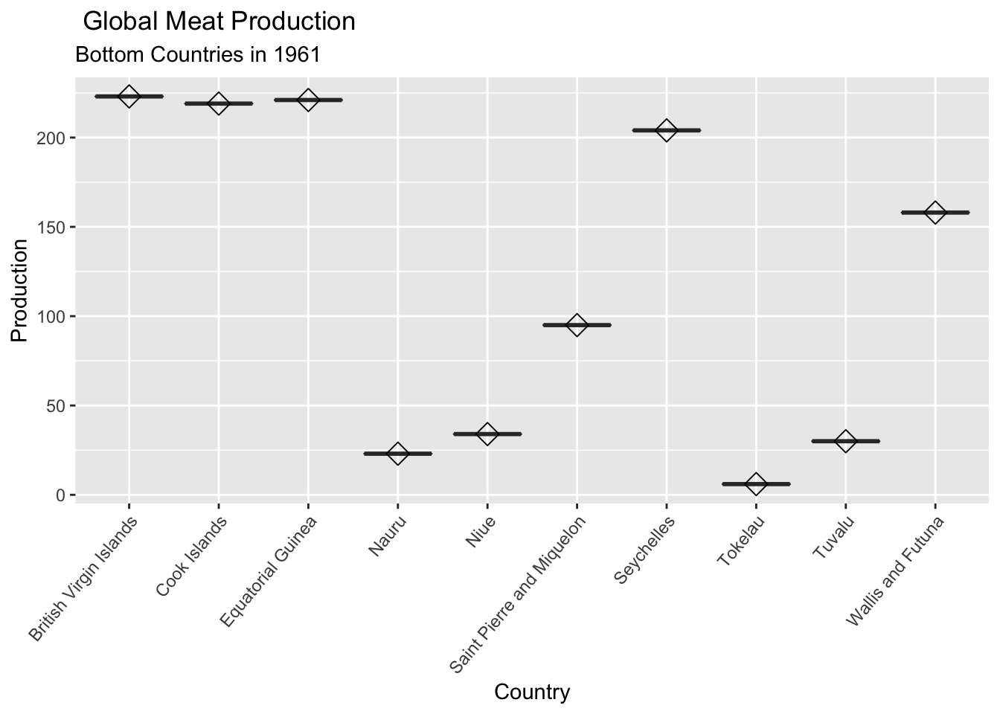
#Summary that presents the lowest countries that produces meat in 2018.
v2_productiondf %>%
select(country, year, production) %>%
filter(year == 2018) %>%
arrange(production) ## country year production
## 1 Saint Pierre and Miquelon 2018 2
## 2 Tokelau 2018 24
## 3 Nauru 2018 79
## 4 Niue 2018 90
## 5 Tuvalu 2018 182
## 6 Bermuda 2018 224
## 7 Saint Kitts and Nevis 2018 232
## 8 British Virgin Islands 2018 267
## 9 American Samoa 2018 344
## 10 Guam 2018 365
## 11 Wallis and Futuna 2018 381
## 12 Antigua and Barbuda 2018 407
## 13 Greenland 2018 505
## 14 Cook Islands 2018 572
## 15 Equatorial Guinea 2018 626
## 16 Faeroe Islands 2018 637
## 17 Netherlands Antilles 2018 732
## 18 United States Virgin Islands 2018 732
## 19 Maldives 2018 870
## 20 Montserrat 2018 938
## 21 Falkland Islands 2018 947
## 22 Seychelles 2018 1040
## 23 Saint Vincent and the Grenadines 2018 1119
## 24 Grenada 2018 1194
## 25 Sao Tome and Principe 2018 1339
## 26 Dominica 2018 1422
## 27 French Guiana 2018 1452
## 28 Micronesia (country) 2018 1487
## 29 Kiribati 2018 1857
## 30 French Polynesia 2018 1947
## 31 Comoros 2018 2365
## 32 Tonga 2018 2405
## 33 Western Sahara 2018 2518
## 34 Martinique 2018 3078
## 35 Solomon Islands 2018 3484
## 36 Saint Lucia 2018 4678
## 37 Samoa 2018 5271
## 38 Cape Verde 2018 5636
## 39 Guadeloupe 2018 6317
## 40 New Caledonia 2018 6663
## 41 Bhutan 2018 6770
## 42 Bahamas 2018 7543
## 43 Vanuatu 2018 8180
## 44 Gambia 2018 9311
## 45 Polynesia 2018 11217
## 46 Macao 2018 11361
## 47 Malta 2018 11630
## 48 Djibouti 2018 11694
## 49 Montenegro 2018 13282
## 50 Suriname 2018 14636
## 51 Barbados 2018 19732
## 52 Macedonia 2018 22255
## 53 Luxembourg 2018 23621
## 54 Belize 2018 23885
## 55 Qatar 2018 24131
## 56 Bahrain 2018 24397
## 57 Brunei 2018 26127
## 58 Swaziland 2018 26305
## 59 Guinea-Bissau 2018 28084
## 60 Burundi 2018 28914
## 61 Lesotho 2018 30290
## 62 Iceland 2018 35731
## 63 Timor 2018 36778
## 64 Liberia 2018 37183
## 65 Gabon 2018 40220
## 66 Eritrea 2018 40868
## 67 Fiji 2018 44127
## 68 Reunion 2018 44554
## 69 Sierra Leone 2018 47104
## 70 Guyana 2018 49984
## 71 Mauritius 2018 52213
## 72 Puerto Rico 2018 60420
## 73 Congo 2018 65514
## 74 Trinidad and Tobago 2018 68597
## 75 Botswana 2018 71616
## 76 Georgia 2018 72133
## 77 Togo 2018 72643
## 78 Namibia 2018 73763
## 79 Estonia 2018 74364
## 80 Cyprus 2018 79496
## 81 Oman 2018 80033
## 82 Benin 2018 81417
## 83 Bosnia and Herzegovina 2018 82235
## 84 Palestine 2018 84319
## 85 Latvia 2018 91469
## 86 Rwanda 2018 95278
## 87 Albania 2018 96034
## 88 Tajikistan 2018 108011
## 89 Kuwait 2018 108012
## 90 Armenia 2018 108247
## 91 Haiti 2018 109239
## 92 Mauritania 2018 118094
## 93 Moldova 2018 122512
## 94 Singapore 2018 125342
## 95 Guinea 2018 129046
## 96 Slovenia 2018 137171
## 97 Jamaica 2018 148165
## 98 Hong Kong 2018 150884
## 99 Slovakia 2018 152268
## 100 Laos 2018 156518
## 101 El Salvador 2018 162032
## 102 United Arab Emirates 2018 170357
## 103 Lebanon 2018 180141
## 104 Cambodia 2018 180454
## 105 Niger 2018 182125
## 106 Somalia 2018 188165
## 107 Central African Republic 2018 188629
## 108 Iraq 2018 191101
## 109 Libya 2018 191541
## 110 Sri Lanka 2018 215157
## 111 Senegal 2018 226682
## 112 Kyrgyzstan 2018 229753
## 113 Croatia 2018 231042
## 114 Bulgaria 2018 232673
## 115 Mozambique 2018 239705
## 116 Jordan 2018 244200
## 117 Democratic Republic of Congo 2018 246984
## 118 Lithuania 2018 250183
## 119 Zimbabwe 2018 259091
## 120 Burkina Faso 2018 261402
## 121 Angola 2018 262490
## 122 Costa Rica 2018 282275
## 123 Honduras 2018 283029
## 124 Cote d'Ivoire 2018 283403
## 125 Ghana 2018 290563
## 126 Nicaragua 2018 292028
## 127 Cameroon 2018 306393
## 128 Turkmenistan 2018 309941
## 129 Zambia 2018 321329
## 130 Panama 2018 322935
## 131 Azerbaijan 2018 326024
## 132 Afghanistan 2018 330636
## 133 Tunisia 2018 345521
## 134 North Korea 2018 346773
## 135 Madagascar 2018 347152
## 136 Cuba 2018 348827
## 137 Norway 2018 361001
## 138 Syria 2018 369151
## 139 Finland 2018 395697
## 140 Nepal 2018 399988
## 141 Yemen 2018 424876
## 142 Mongolia 2018 430466
## 143 South Sudan 2018 433800
## 144 Greece 2018 446972
## 145 Mali 2018 460730
## 146 Guatemala 2018 477118
## 147 Dominican Republic 2018 480509
## 148 Switzerland 2018 485699
## 149 Papua New Guinea 2018 501672
## 150 Czech Republic 2018 506029
## 151 Serbia 2018 514734
## 152 Uganda 2018 519318
## 153 Tanzania 2018 536904
## 154 Malawi 2018 561944
## 155 Melanesia 2018 564126
## 156 Sweden 2018 569733
## 157 Uruguay 2018 662119
## 158 Bangladesh 2018 705745
## 159 Paraguay 2018 734282
## 160 Chad 2018 748787
## 161 Saudi Arabia 2018 762218
## 162 Ethiopia 2018 788102
## 163 Israel 2018 803723
## 164 Algeria 2018 806392
## 165 Ecuador 2018 825199
## 166 Portugal 2018 851574
## 167 Kenya 2018 879126
## 168 Austria 2018 910026
## 169 Bolivia 2018 914906
## 170 Sudan 2018 986987
## 171 Hungary 2018 1037355
## 172 Kazakhstan 2018 1050620
## 173 Ireland 2018 1139853
## 174 Romania 2018 1151673
## 175 Belarus 2018 1193215
## 176 Uzbekistan 2018 1205758
## 177 Venezuela 2018 1294958
## 178 Morocco 2018 1345660
## 179 Nigeria 2018 1451207
## 180 New Zealand 2018 1452644
## 181 Chile 2018 1504623
## 182 Taiwan 2018 1531124
## 183 Belgium 2018 1825437
## 184 Denmark 2018 1874459
## 185 Peru 2018 2015635
## 186 Malaysia 2018 2113716
## 187 Egypt 2018 2152429
## 188 Ukraine 2018 2382786
## 189 South Korea 2018 2498302
## 190 Colombia 2018 2829394
## 191 Thailand 2018 2932944
## 192 Netherlands 2018 2936411
## 193 Iran 2018 3086281
## 194 South Africa 2018 3241019
## 195 Myanmar 2018 3528801
## 196 Indonesia 2018 3596531
## 197 Philippines 2018 3641656
## 198 Italy 2018 3667805
## 199 Turkey 2018 3668362
## 200 Pakistan 2018 3870230
## 201 Japan 2018 4016429
## 202 United Kingdom 2018 4087453
## 203 Poland 2018 4462900
## 204 Australia 2018 4658530
## 205 Canada 2018 4893195
## 206 Vietnam 2018 5227733
## 207 France 2018 5621700
## 208 Argentina 2018 5930063
## 209 Spain 2018 7028021
## 210 Mexico 2018 7051277
## 211 India 2018 7454329
## 212 Germany 2018 8188920
## 213 Russia 2018 10629378
## 214 Brazil 2018 29341250
## 215 United States 2018 46832946
## 216 China 2018 88156383#Boxplot presents the lowest countries that produces meat in 2018.
v2_productiondf %>%
select(country, year, production) %>%
filter(year == 2018) %>%
arrange(production) %>%
head(n=10) %>%
ggplot(aes(x = country, y=production)) +
geom_boxplot()+
stat_summary(fun=mean, geom="point", shape=23, size=4)+
theme(axis.text.x = element_text(angle = 50, hjust=1))+
labs(y="Production", x= "Country",title="Total Global Meat Production", subtitle ="Bottom Countries in the 2018")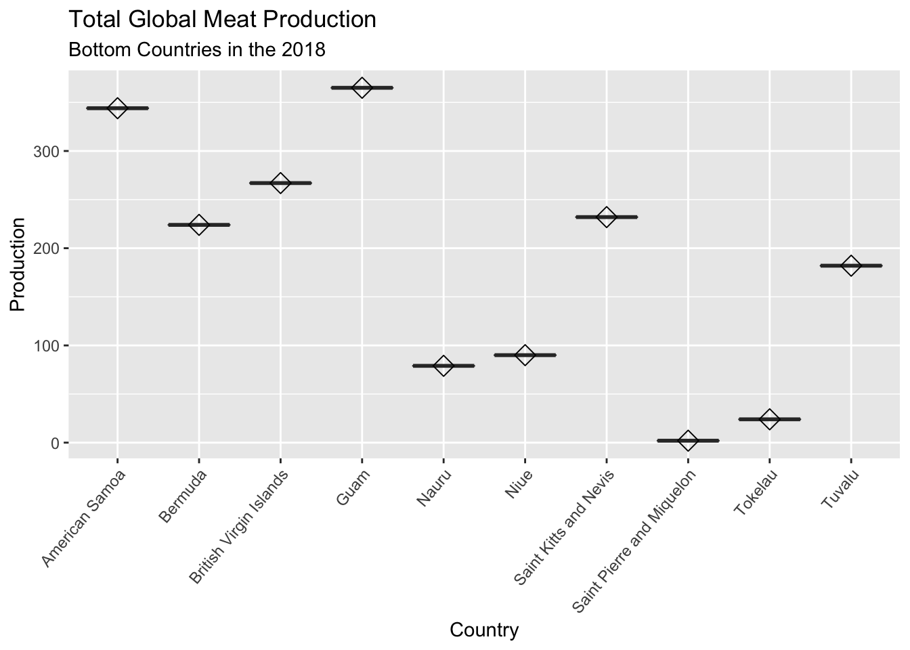
#Line graph illustrating global total amount of meat produced from 1960-2018.
v2_productiondf %>%
group_by(year) %>%
summarise(production = sum(production)) %>%
ggplot(aes(x=year,y=production/1000000))+
geom_line(colour="red")+
theme_classic()+
scale_x_continuous(breaks = round(seq(min(v2_productiondf$year), max(v2_productiondf$year), by = 5)))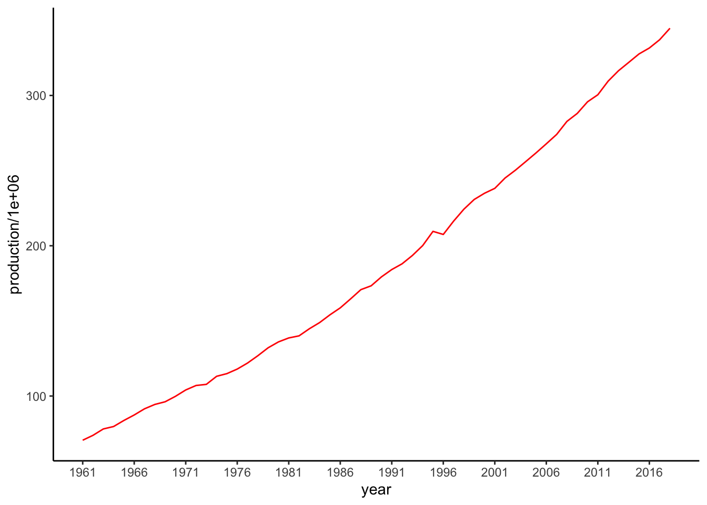
labs(y="Production", x= "Year",title="Total Global Meat Production", subtitle ="between 1960 to 2018")## $y
## [1] "Production"
##
## $x
## [1] "Year"
##
## $title
## [1] "Total Global Meat Production"
##
## $subtitle
## [1] "between 1960 to 2018"
##
## attr(,"class")
## [1] "labels"#Line graph illustrating global total amount of meat produced from 2008-2018.
v2_productiondf %>%
group_by(year) %>%
summarise(production = sum(production)) %>%
arrange(desc(production)) %>%
head(n=10) %>%
ggplot(aes(x=year, y=production))+
geom_line(colour="red")+
labs(y="Production", x= "Year",title="Total Global Meat Production", subtitle ="between 2008 to 2018")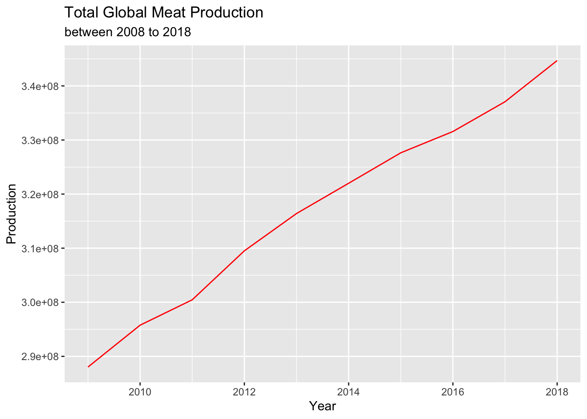
#Line graph illustrating global total amount of meat produced from 1960-1970.
v2_productiondf %>%
group_by(year) %>%
summarise(production = sum(production)) %>%
arrange((production)) %>%
head(n=10) %>%
ggplot(aes(x=year, y=production))+
geom_line(colour="orange")+
theme_gray()+
labs(y="Production", x= "Year",title="Total Global Meat Production", subtitle ="between 1960 to 1970")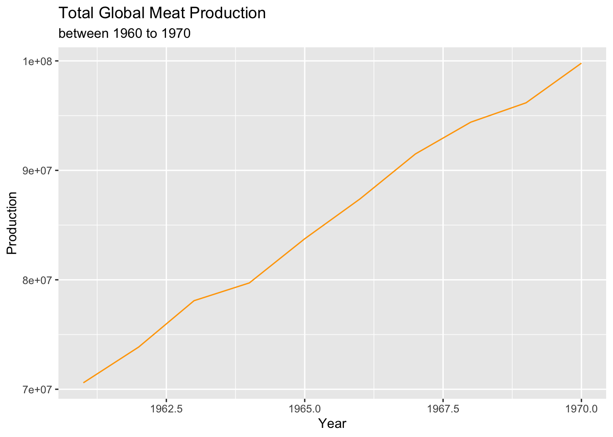
#Line graph showing China as one of the top countries that mass produces meat from 1960-2018.
v2_productiondf %>%
filter(country == "China") %>%
select(country,year,production) %>%
ggplot(aes(x=year, y=production/100000))+
geom_line(colour="white")+
theme_dark()+
labs(y="Production", x= "Year",title="Global Meat Production per Year from China", subtitle ="between 1960 to 2018")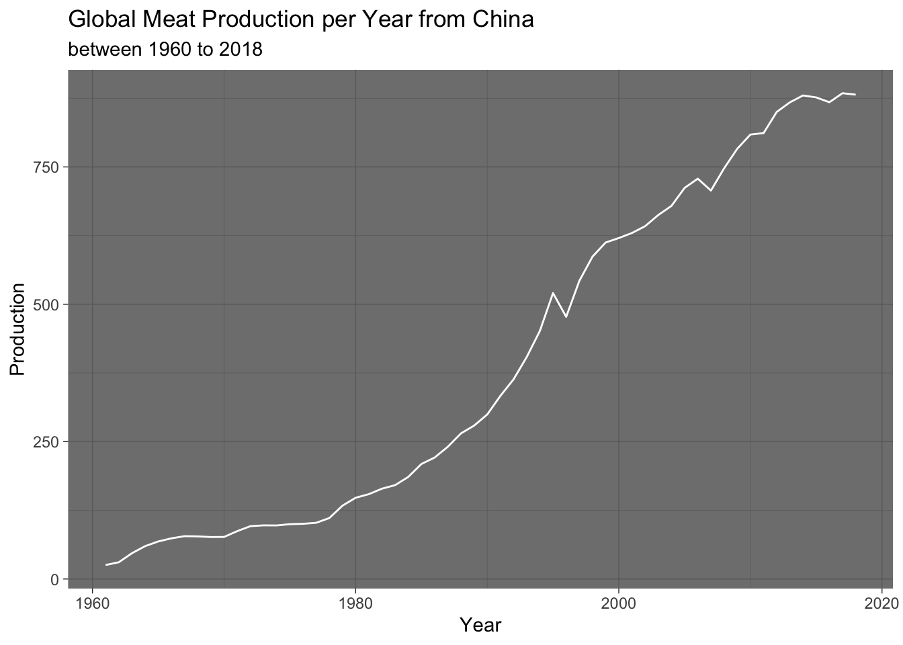
#Line graph showing Bermuda as one of the bottom countries that mass produces meat from 1960-2018.
v2_productiondf %>%
filter(country == "Bermuda") %>%
select(country,year,production) %>%
ggplot(aes(x=year, y=production,fill=year ))+
geom_line(colour="blue")+
theme_dark()+
labs(y="Production", x= "Year",title="Global Meat Production per Year from Bermuda", subtitle ="between 1960 to 2018")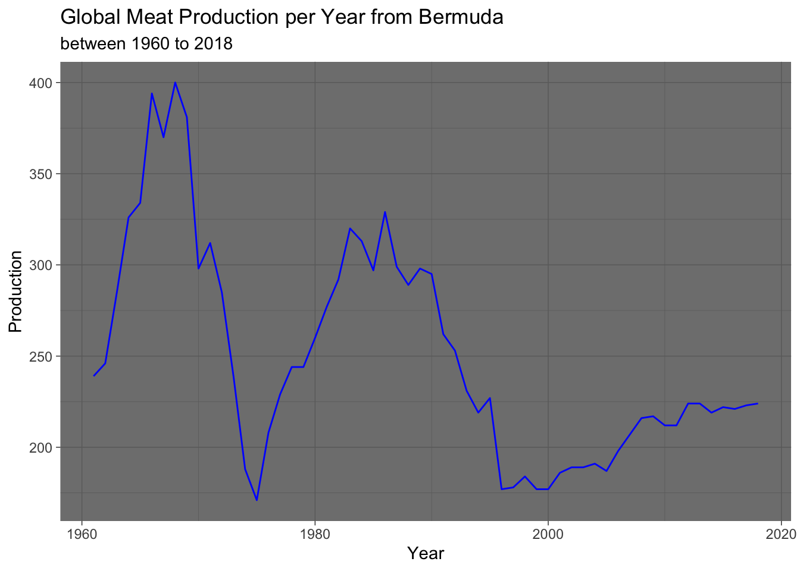